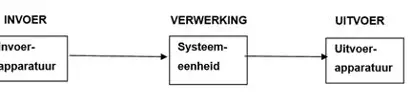

Invoer → verwerking → uitvoer
Een computer werkt met gegevens. Eerst worden gegevens ingevoerd. Daarna worden ze verwerkt door de computer. Uiteindelijk krijgen we een uitvoer.
Invoer
Gegevens komen de computer binnen. Bijvoorbeeld via een toetsenbord, muis, microfoon of touchscreen.
Verwerking
De processor verwerkt de ingevoerde gegevens volgens instructies en programma's.
Uitvoer
De computer geeft het resultaat terug. Bijvoorbeeld via een beeldscherm, speaker of printer.

Invoer → verwerking → uitvoer
Voorbeeld
Stel dat je op je toetsenbord de letter A indrukt. Het toetsenbord is de invoer. De computer verwerkt het signaal en uiteindelijk verschijnt de letter A op je beeldscherm. Dat is de uitvoer.
🎬 Video: Invoer, verwerking en uitvoer
In deze video kun je uitleg bekijken over hoe een computer gegevens verwerkt, van invoer tot uitvoer. Ook komen de processor en binaire code aan bod.